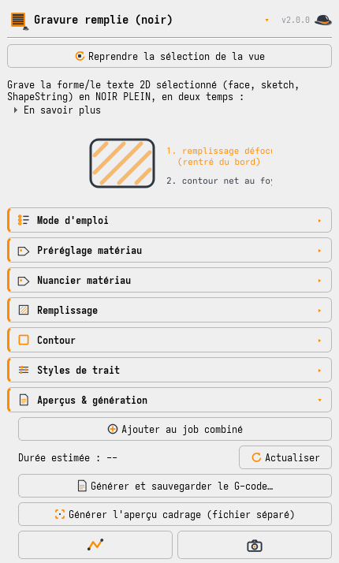

Chaque style porte son petit schéma, affiché sous le sélecteur : trait continu, tirets, points, vague qui enfle et rétrécit, point élargi constant, et les trois dégradés. Le dessin fait en un coup d'œil ce qu'un paragraphe explique mal — notamment la différence entre « dégradé de largeur » (des hachures qui s'épaississent selon leur position, donc une zone ombrée du clair au foncé), « dégradé de largeur le long du tracé » (un seul trait en fuseau, qui suit son parcours) et « dégradé de puissance le long du tracé » (largeur constante, teinte qui fonce).
Dégradé de largeur (le long du tracé) : le trait qui s'affine
Le mode Marquage compte désormais huit styles de trait, et trois d'entre eux s'appellent « dégradé » sans faire la même chose. Deux font varier la largeur — c'est d'eux qu'il est question ici, et la différence vaut d'être comprise une fois pour toutes ; le troisième fait varier la puissance et a sa propre section juste après.
| Style | La largeur suit… | Sur une spirale |
|---|
| Dégradé de largeur (sur la pièce) | la position du point, projetée sur une direction réglable (un angle). Pensé pour des hachures : chaque trait s'épaissit selon où il se trouve, donc la zone s'ombre du clair au foncé — le pendant du « remplissage en dégradé » de la Gravure remplie | la largeur varie de gauche à droite : les tours extérieurs et intérieurs se ressemblent |
| Dégradé de largeur (le long du tracé) | le parcours — l'abscisse curviligne, du premier au dernier point du trait | un vrai fuseau, large à l'extérieur et fin au centre |
Les deux font varier la LARGEUR, à puissance constante. C'est le point qui trompe, et il vaut d'être dit franchement : le G-code de ces styles garde un S unique du début à la fin et ne fait monter que le Z. Sur un dégradé 0,3 → 3 mm, la machine passe de Z+0 à Z+47 mm avec la même puissance. Un trait dix fois plus large reçoit donc dix fois moins d'énergie par millimètre carré : il n'est pas plus noir, il est plus large — et souvent plus pâle.
Sur des hachures, l'effet se lit quand même comme un dégradé de teinte, parce que des traits plus larges couvrent davantage : la zone fonce d'un bord à l'autre. C'est pour ça que ce style existe. Sur un trait seul, il n'y a rien à couvrir, et on obtient simplement un trait qui s'élargit.
Faire varier aussi la puissance. Une case à cocher, sous les deux largeurs, superpose une rampe de puissance au dégradé de largeur : S suit le même parcours, de la valeur de début à celle de fin. C'est la réponse au défaut ci-dessus, et elle vient d'une gravure — une spirale de 0,3 à 4 mm à S1000 constant est sortie marbrée au bout large (fluence effondrée d'un facteur 13) et creusée et carbonisée au bout fin, au foyer. Décochée, le G-code est exactement celui d'avant.
Le bouton « Compenser la fluence » remplit la puissance de fin avec celle qui donnerait la même teinte qu'au début : S proportionnel à la largeur, le même modèle que le style vague. Et il dit franchement ce que ça vaut — sur ce fuseau 0,3 → 4 mm, la teinte constante demanderait S75 au bout fin, soit sous la plus basse puissance jamais mesurée sur ce bois (S200 sur hêtre à F800). En dessous, la table de largeurs ne dit plus rien : le trait peut ne pas marquer du tout, et le panneau l'écrit au lieu de proposer un réglage inconnu.
La conclusion à garder : sur un rapport de largeurs de 13×, une teinte uniforme n'existe pas. Ancrer à l'autre bout — S900 au foyer — demanderait S12000 au bout large, quatre fois plus que la machine ne sait donner. Il faut donc choisir : resserrer l'écart de largeurs, ou accepter que la teinte varie. La rampe permet au moins de placer ce compromis là où on veut, au lieu de le subir.
Ce que fait la teinte, elle, dépend du bois et se lit dans le nuancier mesuré — pas d'une règle simple. Sur le hêtre de l'atelier, un même 0,3 → 3 mm à S800 donne : à F800 une teinte qui tombe de 100 à 63 %, à F1500 une teinte qui monte de 74 à 83 %, à F2000 une qui redescend de 66 à 55. L'aperçu photo affiche cette teinte-là, morceau par morceau.
Deux cases suffisent : largeur au début et largeur à la fin, en millimètres. L'atelier en déduit la hauteur de bec par la calibration du point — sur la machine de l'atelier, 4 mm de large demandent +64,8 mm de remontée. Attention à la borne basse : le point au foyer mesure 0,30 mm, donc on ne descend pas sous 0,30 optiquement (le 0,10 mm des « lignes gravées » est une largeur brûlée, pas le point).
Chaque trait sélectionné porte sa rampe entière. Sélectionner deux lignes donne deux fuseaux identiques, quelle que soit leur longueur — le résultat ne dépend donc pas de l'ordre dans lequel l'atelier enchaîne les tracés, qui est choisi pour raccourcir le trajet et non pour dessiner.
Et sur un cercle ? C'est la question à se poser, car une boucle fermée revient sur son point de départ. Deux réponses, au choix dans le panneau : marche visible (la largeur va du début à la fin le long du tracé, donc un ressaut net là où la boucle se referme — littéral et prévisible) ou aller-retour (la largeur de fin est atteinte à mi-parcours, puis redescend : la boucle se referme sans aucun raccord). Sur un trait ouvert l'option est ignorée — elle contredirait « largeur à la fin ».
Ces réglages se rangent dans les préréglages du panneau, avec le style et tout le reste : c'est là que se constitue la bibliothèque de traits. Au passage, les champs du dégradé n'étaient jusqu'ici ni mémorisés d'une session à l'autre ni enregistrés dans un préréglage — un fuseau réglé se perdait à la fermeture du panneau. C'est réparé.
Dégradé de puissance : le vrai dégradé de teinte
C'est le troisième dégradé, et il fait exactement l'inverse des deux autres : le bec ne bouge pas et c'est la puissance qui rampe le long du tracé. Deux cases : puissance au début et à la fin, en S. Clair au départ, foncé à l'arrivée.
Une nuance qui a d'abord été écrite à l'envers ici. Le bec immobile veut dire que le point optique ne change pas — mais le trait brûlé, lui, suit quand même la puissance, parce qu'à basse puissance seul le cœur du faisceau dépasse le seuil de brûlure du bois. Mesuré sur hêtre au foyer à F800 : 0,10 mm à S200 contre 0,30 à S1000, soit 3×. Ce style est donc d'abord un dégradé de teinte, avec un trait qui s'épaissit en même temps — ce qui reste sans commune mesure avec un fuseau, où la largeur varie d'un facteur 11 sur la même sélection. L'aperçu peint désormais cette variation.
C'est le style à prendre quand on veut un dégradé de gris sur un trait. Les deux « dégradés de largeur » ne savent pas le faire : en montant le bec à puissance constante, ils élargissent le trait et le pâlissent plutôt que de le foncer.
Il partage toute la mécanique du fuseau, parce que c'est la même rampe — elle interpole une valeur le long de l'abscisse curviligne, peu lui importe que cette valeur soit une hauteur ou une puissance. Il en hérite donc les mêmes garanties : chaque trait porte sa rampe entière, et sur une boucle fermée le même choix marche visible / aller-retour — utile ici, car un ressaut de teinte à la fermeture d'un cercle se voit beaucoup.
Deux garde-fous : la consigne est bornée à l'échelle de la machine (une valeur au-delà de S max est ramenée à S max), et le champ « Puissance » global se grise, puisqu'il ne sert plus à rien quand la puissance est rampée. Côté machine, ce style change la puissance à chaque point : avec « Puissance par M67 » coché, ça ne coûte rien (cf. chapitre 3) ; sans lui, chaque changement de S arrête le mouvement.
Planches resserrées (v2.15) : traits de 20 à 12 mm, entre-rangs de 6 à 4, étiquettes de 3 à 2,5 mm, et surtout un entre-colonnes calculé sur la largeur réelle des étiquettes au lieu des 12 mm réservés au jugé. Résultat : Planche 1 de 195 × 74 à 145 × 64 mm (−36 % de surface, 4 min 11 → 3 min 05) et Planche 2 de 135 × 114 à 94 × 94 mm (−43 %, 5 min 01 → 3 min 35). Moins de chute consommée, une photo plus facile à cadrer, et un test plus rapide. Douze millimètres suffisent : même à F3000, la plus rapide, l'accélération ne mange que 2 mm à chaque bout et il reste près de 8 mm à vitesse établie. Un contrôle automatique vérifie qu'aucune étiquette ne vient toucher un trait après resserrage — c'est comme ça qu'un trait s'était retrouvé gravé en travers des chiffres de la réglette au premier essai.
Mesurer sur la photo, dans FreeCAD
Un bouton fait tout : redresser, ranger, poser à l'échelle.
Dans la section qui grave les planches, sous les boutons « Planche 1/2/3 », le bouton « Redresser une photo de planche… » enchaîne toute la manœuvre : on choisit une ou plusieurs photos (les gros plans sont acceptés), on confirme les cotes de la mire, on clique les quatre croix dans la fenêtre OpenCV, et l'atelier redresse la perspective, range l'image dans les photos du résultat avec la date et l'échelle en description, puis la pose dans le document à sa taille exacte en millimètres. Plus aucune taille à recopier.
Le redressement s'exécute avec le python du système, pas celui de FreeCAD : OpenCV n'existe pas dans l'AppImage, et le sous-traiter évite d'alourdir les dépendances du workbench.
Un piège propre aux AppImage, réglé une fois pour toutes. FreeCAD impose PYTHONHOME à tout son environnement : un python système lancé depuis lui allait donc chercher sa bibliothèque standard dans l'AppImage et mourait sur « Failed to import encodings module » avant même d'exécuter une ligne. Le sous-processus reçoit maintenant un environnement débarrassé de PYTHONHOME, PYTHONPATH, LD_LIBRARY_PATH et des variables de plugins Qt — ces dernières comptent autant, OpenCV ouvrant sa fenêtre avec Qt6 et ne devant surtout pas charger celles de l'AppImage.
Les cotes sont proposées, jamais imposées. Le dialogue pré-remplit ce que la mise en page actuelle produirait, mais la planche qu'on tient peut être plus ancienne — ses vraies cotes sont gravées dessus, sous la réglette. On lit sur le bois, on corrige si besoin.
Et pour mesurer sans changer de panneau : l'outil Ligne du Draft affiche bien la distance, mais il occupe le panneau des tâches — qui est exclusif dans FreeCAD, donc impossible de garder la grille de saisie ouverte à côté. D'où le bouton « Mesurer A → B dans la vue 3D » placé dans la saisie des mesures : on clique la case à remplir, puis le bouton, puis les deux extrémités dans la vue — et la distance atterrit dans la case. Aucun aller-retour. La case visée est nommée à l'écran (« Cible : S1000 / F800 (foyer) ») avant que vous pointiez : une valeur tombée dans la mauvaise case ne se voit pas, elle ressemble à une mesure.
Mesurer à la LIGNE, sur le profil moyenné (v2.33.0). Le bouton « Mesurer sur l'image redressée… » ouvre la planche, on encadre un trait à la souris, et l'atelier affiche à côté de lui son profil de noirceur moyenné sur toute sa longueur. Deux lignes horizontales, qu'on fait glisser (flèches ↑↓ pour affiner au pixel), traversent l'image et la courbe ; la largeur s'affiche en direct.
Une section neuve naissait fermée (v2.38.1). Le repliage des sections lisait l'état mémorisé avec un défaut en dur à « repliée ». Le paramètre prévu pour dire le contraire n'était jamais consulté : une section que personne n'a jamais repliée — puisqu'elle vient d'exister — s'ouvrait fermée. Toute nouveauté naissait donc invisible derrière un chevron que rien n'invite à cliquer. C'est arrivé trois fois dans la même journée : le bouton Planche 2b, puis la case de la mire. Un réglage qu'on ne trouve pas est un réglage qui n'existe pas.
Le défaut vient désormais de l'appelant. Une section qui porte l'entrée d'un nouveau chantier s'ouvre la première fois ; une section repliée à la main le reste, parce que c'est un choix et qu'il prime. La case de la mire a sa propre section, « Mesure sur photo ».
La Grille de test peut porter sa mire (v2.38.0). Première pièce de la lecture automatique de la noirceur : une case à cocher ajoute autour de la grille les quatre repères en croix et la réglette au millimètre, la même mire que les planches de calibration. Sans elle une planche n'est pas redressable — l'homographie a besoin de quatre correspondances et la réglette donne l'échelle.
La mire est gravée au foyer même quand les cellules sont défocalisées : une référence de mesure floue ne se mesure pas. À côté du G-code, l'atelier dépose une fiche qui donne chaque case dans le repère de la mire — jamais en coordonnées machine, puisque le fichier est recadré au zéro pièce à l'écriture et qu'une coordonnée machine serait fausse d'une translation dès le fichier suivant.
Pourquoi la noirceur ne se lit pas comme une largeur. Un millimètre reste un millimètre quelle que soit la lampe, et c'est pour ça que l'outil de profil sort un chiffre absolu. Un gris, non : change l'exposition et tout se décale en bloc. La mesure se fera donc entre deux repères pris dans la même photo — un bout de bois nu et la case la plus noire — ce qui est exactement l'échelle que le panneau annonce déjà, « 0 = matériau intact, 100 = noir max ». En dessous de 30 niveaux d'écart entre les deux repères, l'atelier refuse de chiffrer plutôt que de diviser du bruit par du bruit.
Gravure photo mettait 14 secondes à s'ouvrir (v2.37.1). Christophe a entendu le ventilateur du PC avant que rien ne s'affiche. Deux fautes empilées, toutes deux dans du code écrit le matin même : la table des largeurs échantillonnait 161 points en rechargeant le fichier de configuration à chaque point, alors que les mesures étaient déjà en main deux lignes plus haut ; et la recherche du plafond suffisant reconstruisait une table entière par plafond candidat — 161 tables, soit près de 26 000 lectures du fichier pour un seul appel.
14,17 s → 0,12 s pour ouvrir le panneau. La suite de tests payait la même note sans le dire : un de ses fichiers est passé de 16,7 s à 1,1 s. Le garde-fou posé compte les lectures de configuration et non les secondes — un seuil en temps est bruité par la machine, un compteur ne l'est pas.
Le bois a tranché : F200 carbonise, F1000 noircit (v2.37.0). Le même dégradé gravé deux fois côte à côte sur hêtre : à F200 pas 0,34 le bois carbonise, à F1000 pas 0,14 il sort noir franc — et deux fois plus vite. La recette livrée passe à F1000.
Elle avait été mise à F200 et appelée « la plus sûre » parce que c'était le régime avec la plus grosse marge au-dessus du plancher de mesure. C'était confondre deux sûretés. Une marge de mesure n'est pas une marge de gravure : un trait large à basse vitesse est large surtout parce que le temps de pose est long, et c'est ce temps qui brûle.
L'atelier avait pourtant le chiffre qui le prédisait. L'indice d'énergie S/(pas × F), affiché sur la gravure remplie depuis le carré carbonisé du 30 juillet, vaut 5,7× le noir le plus économe mesuré à F200 contre 2,8× à F1000. Il n'était simplement montré nulle part sur ce tramage, dont le verdict ne parlait que de contraste et de couverture — deux façons de regarder la largeur. Il y figure désormais, avec les deux repères gravés cités dans le message : un seuil qu'on ne peut pas rattacher à du bois se lit comme un caprice.
Le seuil d'alerte est à 4,0 et non à 2,0 comme celui du remplissage : à 2,0 il crierait sur F1000, le régime que le bois vient de valider. Un avertissement qui accuse ce qui marche s'apprend à s'ignorer. C'est un seuil à deux points, à resserrer quand une troisième planche en donnera un de plus.
Une étiquette pouvait devenir un mouvement (v2.36.1). Les deux émetteurs de traits à plat écrivaient le commentaire d'une bande tel quel. Un libellé non parenthésé — « A F200 pas 0.34 » — sortait donc en ligne de G-code, et LinuxCNC y lit un mot d'axe A suivi d'une avance : un mouvement, pas un texte. Sur une machine sans axe rotatif c'est une erreur au chargement ; sur une machine qui en a un, ça bouge. Trouvé en fabriquant une planche témoin, dans le fichier produit — pas dans le code. Les commentaires sont désormais parenthésés d'office, et les parenthèses internes remplacées par des crochets (elles ne s'imbriquent pas en RS274 : une seule refermerait le commentaire et rendrait la suite exécutable).
Le tableau des largeurs du hêtre était en partie fabriqué (v2.36.0). La planche remesurée à l'outil de profil a été comparée à la sauvegarde du matin : les colonnes F200, F400 et F800 y étaient identiques, 0,10 à 0,30 mm par pas de 0,05 exactement. Trois fois la même rampe parfaite : ce n'était pas un relevé. Le vrai trait à S1000/F800 mesure 0,18 mm, pas 0,30.
Deux recettes livrées en dépendaient. « Portrait Hêtre — lignes gravées » et la similigravure gravaient au pas 0,30 pour un trait de 0,18 : 0,12 mm de bois nu entre chaque ligne, 40 % de la surface. Elles gravaient des rayures. Les deux sont recalées sur la mesure ; la première passe à F200 au pas 0,34, le seul régime qui fasse vraiment enfler le trait sous le plafond S900 de l'atelier (1,94×). C'est plus lent, et c'est le prix de la vérité : à F800 le trait n'enfle plus que de 1,33× sous ce plafond, et le tramage refuse — à juste titre.
Un tableau inventé est pire qu'un tableau vide. Vide, l'atelier refuse et renvoie à l'établi. Inventé, il répond — de façon plausible, et pour toujours.
Le refus expliquait autre chose que ce qu'il décidait (v2.36.0). Il jugeait sous le plafond de puissance et s'expliquait sans lui, d'où cette phrase affichée telle quelle : « soit 1.50x — sous le rapport 1.5x », qui se contredit seule, suivie de « Descendre à F3000 » alors que F3000 est presque quatre fois plus rapide que la vitesse en cours. Une seule fonction calcule désormais la plage ; quand c'est le plafond qui bloque, le message le dit et nomme le plafond le plus bas qui débloque.
La fenêtre choisit sa case elle-même (v2.35.1). Elle exigeait d'avoir déjà cliqué une case dans le panneau, et refusait sinon dans un libellé discret — tout comme elle refusait, aussi discrètement, quand la grille était verrouillée. Deux refus muets qui se cumulaient : le bouton semblait ne rien faire. Un refus qu'on ne voit pas est un logiciel qui ne répond pas.
La case se choisit désormais dans la fenêtre, par une liste déroulante « La mesure ira dans… » qui contient toutes les cases de la grille, dans l'ordre du bois. Au premier appel elle se pose sur la première case encore vide — on reprend là où l'on s'était arrêté. Et si la grille est verrouillée, l'atelier le dit et propose de l'ouvrir, au lieu de renoncer en silence.
Choisir la planche dans le panneau (v2.35.0). L'ouverture automatique prenait la plus récente : en mesurant le foyer, elle ouvrait la planche de défocus sans que rien ne le dise, et il fallait passer par un dialogue de fichiers pour en sortir. Une liste déroulante « Planche » est désormais dans le bloc de mesure, avec un libellé lisible — Planche 2b — 11h14 (60x110). Le choix vaut pour toute la séance et pour toutes les grilles. Un automatisme qui choisit à votre place doit au minimum montrer ce qu'il a choisi.
Enchaîner les cases sans fermer la fenêtre (v2.34.0). Deux gênes signalées à l'usage, et la seconde était la plus sérieuse : il fallait rouvrir la fenêtre pour chaque trait, et surtout rien ne disait dans quelle case allait la mesure. La case visée est désormais écrite en grand et en permanence en haut de la fenêtre — une valeur qui atterrit dans la mauvaise case ne se voit pas, elle ressemble à une mesure.
Et le bouton « Retenir → case suivante » range la largeur, avance d'une case et revient au choix du trait sans fermer. L'ordre suit celui du bois : une colonne de vitesse à la fois, du haut vers le bas — exactement la disposition des traits sur la planche, donc l'œil parcourt l'écran et le bois de la même façon. Un ordre par lignes obligerait à sauter d'une colonne de vitesse à l'autre entre chaque mesure.
La planche s'ouvre toute seule (v2.33.1) : la plus récente du dossier, puis retenue pour toute la séance — on mesure des dizaines de cases sur une même planche, redemander le fichier à chaque fois est un clic de trop répété quarante fois. Son nom est dans le titre de la fenêtre, pour vérifier d'un coup d'œil que c'est la bonne, et un bouton « Changer de planche… » permet d'en ouvrir une autre.
Pourquoi c'est bien mieux qu'un clic. Le bord d'une brûlure n'est pas une ligne : à 60 mm de défocus c'est une rampe de 0,7 mm entre le bois franc et le noir franc. Mesuré sur une planche réelle : une lecture prise sur une colonne va de 2,36 à 3,96 mm — 1,60 mm de hasard selon l'endroit visé — quand la même largeur lue sur le profil moyenné ne bouge que de 0,22 mm lorsqu'on déplace le seuil de 40 à 60 %. Moyenner divise l'incertitude par sept.
Les repères 40/50/60 % sont tracés sur la courbe et les lignes démarrent au seuil 50 %, mais ce ne sont que des propositions : c'est vous qui décidez où s'arrête la brûlure — bord du noir franc ou bord du roussi — et la seule règle est de vous y tenir sur toute la planche. Le recadrage est manuel lui aussi : la détection automatique des traits est ce qui a échoué le plus souvent sur ce projet.
Moyenner, parce que le trait n'est pas droit (v2.18.0). Les bords d'une brûlure ondulent — c'est le grain qui décide, pas la machine. Des mesures successives sur la même case sont donc cumulées : la case reçoit la moyenne courante, et le panneau affiche l'étendue entre vos mesures. Trois pointés à trois endroits du trait valent bien mieux qu'un seul. L'étendue n'invalide rien : elle vous dit si votre critère « où s'arrête la brûlure » a tenu d'un bout à l'autre, ce qu'une valeur seule ne dit jamais. Re-cliquer la case repart de zéro.
Le laser est GRAVÉ sur la planche (v2.24.0). À côté des cotes, sous la réglette, la mire grave désormais le nom du laser actif — 140-60 LT-80W-AA-PRO. Il était jusque-là dans le nom du fichier redressé, ce qui ne suit pas le bois : une planche retrouvée sur l'établi six mois plus tard ne disait pas de quelle diode elle venait. C'est le même raisonnement que les cotes gravées, appliqué à la donnée qui décide du sens des mesures — une largeur brûlée n'a de valeur que pour le module qui l'a produite.
Écrit en police mono-trait et non en 7 segments : cette dernière ne connaît que les chiffres, S, F, le point et le tiret, donc elle aurait gravé un nom quasi vide — et dans le bois, ça ne se voit qu'après coup. Un nom trop long rétrécit plutôt que de déborder sur le repère en croix, qui reste la référence. L'en-tête du G-code le répète, mais c'est le bois qui fait foi : lui seul survit à la régénération du fichier.
Le verrou vaut aussi pour l'outil de mesure (v2.31.1). « 🔒 Verrouiller les résultats » bloquait le clavier, mais pas « Mesurer A → B » : la mesure s'écrivait dans une case protégée — et écrasait sans un mot une valeur déjà relevée. Un verrou qui ne retient qu'une main sur deux ne protège rien, il rassure à tort. L'outil refuse désormais, le dit dès le ciblage de la case (pas après avoir pointé deux fois dans la vue) et ne compte pas la mesure refusée dans la moyenne.
« Toutes les planches » en contient enfin quatre (v2.31.0). La 2b avait été ajoutée aux boutons et pas au fichier combiné : un bouton qui dit « toutes » doit dire vrai. La 3 et la 2b, toutes deux étroites et hautes, sont empilées dans une colonne de droite — les mettre à la suite des deux premières donnerait une planche de 30 cm de long, alors qu'à droite elles tiennent dans la hauteur déjà occupée. L'ensemble passe de 204 × 173 à 225 × 217 mm : prévoyez la chute en conséquence. Le test vérifie qu'aucune des quatre emprises n'en chevauche une autre — deux planches superposées, c'est du bois perdu et des mesures impossibles, et ça ne se voit qu'à l'aperçu.
L'écart des rangées suit le défocus (v2.30.0). Il était fixe à 4 mm, dimensionné pour des traits de 0,30 mm au foyer. À 55 et 60 mm de défocus la brûlure fait 4,1 et 4,4 mm : les rangées se rejoignaient, et deux traits qui se touchent ne se mesurent plus. Vu sur le bois, sur la première Planche 2b sortie de la machine. L'écart est désormais calculé par niveau à partir du cône de divergence — 4,0 mm à 15, 4,5 à 36, 5,0 à 40, 6,6 à 55, 7,2 à 60 — en laissant 0,6 largeur de bois propre entre deux bords. Proportionnel à ce qu'on mesure, ce qui est le bon critère : une marge fixe est trop serrée en haut et gaspillée en bas. Les niveaux faibles restent donc aussi compacts qu'avant.
Planche 2b — défocus profond (v2.29.0). Les niveaux 40, 55 et 60 mm ne portaient qu'un point chacun, venu de la Rampe puissance/vitesse. Un niveau à une seule puissance ne peut pas servir d'ancre au modèle : il ferait croire que la largeur ne dépend pas de la puissance et aplatirait toute la plage qu'il borde. Cette planche leur donne une seconde puissance, et au-delà de 36 mm le modèle interpolera au lieu d'extrapoler.
S600/S800/S1000 × F200/F400, et rien d'autre. À ces hauteurs le point fait 3 à 4 mm : la fenêtre où le trait marque encore est mince, il n'y a pas de place au-dessus de SMAX, et ralentir est le seul moyen de remonter la fluence. Ces six valeurs sont exactement des lignes et des colonnes de la grille de saisie ② — une planche qui graverait S850 produirait une mesure que le tableau ne saurait pas afficher, ce qui serait absurde après avoir brûlé du bois pour l'obtenir. 30 mm n'y figure pas : il tombe entre 15 et 36, donc déjà interpolé. Et une case blanche est une donnée : à 60 mm, S600 ne marquera sans doute pas, et c'est le seuil du matériau à cette hauteur.
Une grille vide qui n'aurait pas dû l'être (v2.28.0). Une grille de défocus apparaît dès qu'une mesure existe à ce niveau — mais elle n'a de cases que pour les puissances et vitesses de la planche. Les points venus de la Rampe puissance/vitesse portent des puissances interpolées (S585, S716, S909…) : aucune case ne leur correspond, et le tableau s'affichait entièrement vide. Un tableau né d'une mesure qu'il ne montre pas. Ces points sont désormais listés sous la grille, avec leur largeur, et le rappel qu'ils sont conservés à l'enregistrement mais qu'un niveau à une seule puissance ne sert pas d'ancre au modèle. Rien ne s'affiche quand tout tient dans la grille : un avertissement permanent est du bruit qu'on cesse de lire.
Un écart trop faible n'est pas une modulation (v2.27.0). « Lignes gravées » refusait une vitesse seulement si le trait était exactement plat : un centième d'écart suffisait à promettre une modulation. Sur la planche du 01/08/2026, F1500 a donné 0,10 → 0,13 mm — un pixel et demi sur l'image redressée — et l'atelier s'est mis à accepter des vitesses où le trait ne module rien. Il faut désormais un rapport d'au moins 1,5× entre le trait le plus fin et le plus gros. Le refus nomme le rapport obtenu et le seuil, au lieu de dire seulement « trop vite ».
Repère utile pour vos propres mesures : une colonne qui affiche la même largeur à cinq puissances différentes n'est pas un plateau physique, c'est une grandeur passée sous votre plancher de mesure. Laissez-la telle quelle — l'atelier saura la refuser.
La galerie dit maintenant QUELLE planche elle montre (v2.26.0). Le sélecteur « Photos de » était placé au-dessus de la carte de section, donc visuellement rattaché à la section précédente : on croyait à une liste unique, et une planche rangée sous une autre entrée passait pour perdue. Il est désormais la première ligne sous le titre. Chaque planche a sa propre liste.
Et le champ Description tient enfin son texte. Depuis que l'atelier écrit lui-même les descriptions (échelle, cotes, contrôle de réglette, fichier de mesure), elles dépassent 200 caractères : dans un champ d'une ligne on n'en voyait que la fin — « vérifiée à +0.11 % » — et y ajouter ses conditions de gravure revenait à écrire à l'aveugle. C'est une zone de plusieurs lignes, enregistrée quand on la quitte. Complétez le texte existant, ne l'effacez pas : le champ remplace la description.
Les cotes contredisent la planche choisie ? L'atelier le dit (v2.25.0). La planche est choisie avant de voir la photo : on peut donc cliquer « Planche 1 » et photographier la 2 — c'est arrivé le 01/08/2026. Rien n'est faussé (l'échelle vient des cotes, lues sur le bois), mais la photo part sous la mauvaise planche et son fichier porte un nom qui ment. Quand les cotes saisies sont celles d'une autre planche connue, l'atelier le signale et propose de corriger le rangement — les cotes viennent du bois, le choix initial vient de la mémoire ; quand les deux se contredisent, c'est la mémoire qui a tort.
Et la Planche 3 aussi (v2.24.1). Elle n'a pas de mire — elle se juge à l'œil, pas par photo — donc elle n'héritait pas du nom gravé par la mire et sortait anonyme. Or c'est précisément la planche qui calibre le point de ce laser-là. Le nom y est maintenant gravé sur une rangée à part, au-dessus de tout le reste, ce qui rend impossible toute collision avec les libellés F<vitesse> quel que soit le nombre de bandes. Les trois planches de calibration portent donc leur laser.
Supprimer une planche, fichiers compris (v2.23.0). Regraver une planche mieux réussie est le cas normal de ce travail : on grave, on mesure, on n'aime pas, on regrave. Le bouton « Gérer / supprimer des planches… » liste celles du dossier avec leur laser, leurs cotes, leur poids et surtout l'écart mesuré sur la réglette — c'est le bon critère pour choisir laquelle garder, puisque c'est la seule mesure indépendante des croix cliquées. Sélection multiple, confirmation nommant les fichiers, puis suppression de l'ensemble : image de mesure, fiche, aperçu, contrôle des repères, et la vignette correspondante de la galerie. « Supprimer la photo affichée » de la galerie n'enlevait que l'aperçu et laissait les 55 Mo sur le disque — une suppression qui n'efface que ce qui se voit est un demi-mensonge.
Et le champ du nom de laser est enfin large, avec la consigne qui va avec : une case de quinze caractères invitait à taper « Bleu » là où il faut une référence de matériel.
Un dossier à elles, et le laser dans le nom (v2.22.0). Les planches redressées ne sont plus déposées à côté de la photo d'origine mais dans un dossier dédié, réglable en Préférences (Dossier des planches, par défaut ~/Planches-LaserAtelier). Elles s'y retrouvent sans avoir à se rappeler d'où venait la photo — et cessent de s'empiler au milieu des IMG_*.JPG.
Le nom du fichier porte désormais le laser actif : LT-80W-AA-PRO_planche1_20260801-0745_redresse.png, et la fiche .json le répète. Ce n'est pas de l'étiquetage : une largeur brûlée n'a de sens que pour le module qui l'a gravée. Deux diodes différentes donnent deux tables différentes — et à l'inverse, quelqu'un qui possède le même module peut reprendre ces mesures telles quelles, sans refaire une heure d'établi. Sans le nom du laser sur le fichier, cette réutilisation demande de se souvenir, ce qui revient à dire qu'elle n'aura pas lieu. Le nom vient du profil laser actif : renommez-le avec la référence de votre module (Préférences → Profils laser) et tout le reste suit.
Reposer une planche déjà redressée (v2.21.0). Redresser est un travail qu'on fait une fois : cliquer quatre croix, contrôler l'échelle sur la réglette. Rouvrir FreeCAD ne doit pas obliger à tout recommencer pour la seule raison que le document n'a pas été enregistré — l'image, elle, est toujours sur le disque. Le bouton « Reposer une planche déjà redressée… » la repose à son échelle exacte, sans un seul clic sur une croix. La taille en mm vient d'une fiche .json écrite systématiquement à côté de l'image — même raisonnement que les cotes gravées sur la planche, un cran plus loin : le fichier porte ce qu'il faut pour être relu. Sans fiche (image antérieure), l'atelier déduit la taille des pixels et demande l'échelle, 50 px/mm par défaut.
Et vos mesures, elles, ne se perdent pas : elles vivent dans la configuration de l'atelier, pas dans le document. Rouvrez le panneau, choisissez le matériau, les grilles se remplissent toutes seules — à condition d'avoir cliqué « Enregistrer les mesures » avant de fermer.
Revoir les planches redressées, sans ouvrir le dossier (v2.20.0). Une liste déroulante « Photos de : Planche 1 / 2 / autre » et sa galerie sont placées sous le bouton de redressement : vignette cliquable, description, suppression. Elles manquaient — le message annonçait « rangée dans les photos du résultat » et rien ne les affichait ; il fallait aller ouvrir le dossier à la main. Une donnée qu'on range sans jamais la remontrer n'est pas rangée, elle est perdue poliment. Les clés de rangement sont désormais une source unique, partagée par le bouton qui écrit et la galerie qui lit.
Et la galerie ne duplique plus 55 Mo par photo. Le PNG redressé (12800 × 4300, sans perte) est ce qu'il faut pour mesurer, pas pour regarder : la galerie garde un aperçu JPEG de ~0,5 Mo et la description porte le chemin du fichier de mesure, resté à sa place. 290 Mo s'étaient accumulés en une matinée avant qu'on le remarque.
En travers du trait, pas en diagonale (v2.19.0). Une case à cocher — active par défaut — ne retient que la composante perpendiculaire au trait, c'est-à-dire la plus grande de dx et dy (dy pour un trait horizontal, dx pour un vertical). C'est important : la distance directe A→B vaut hypot(dx, dy), donc elle est toujours supérieure à la largeur réelle dès que les deux clics ne sont pas exactement l'un au-dessus de l'autre. Sur un trait de 0,30 mm, 0,20 mm de décalage latéral donne 0,36 — 20 % de trop, et rien ne le signalait. Une largeur ne doit pas dépendre de la fermeté de la main. Décochez pour mesurer autre chose qu'une largeur (une diagonale, un entraxe) ; dx, dy et la distance directe sont de toute façon toujours affichés.
Un bouton sous chaque grille (v2.19.0). Un seul bloc en bas du panneau obligeait à faire défiler la fenêtre entre chaque valeur, la grille du haut et le bouton ne tenant pas ensemble à l'écran. Chaque grille — foyer et chaque niveau de défocus — a maintenant le sien, et son message s'affiche juste au-dessous, là où l'œil est déjà.
Un défaut trouvé au premier usage réel, le 01/08/2026. La case visée était lue au moment du clic sur le bouton — c'est-à-dire après que le bouton ait pris le focus, donc jamais. Le panneau répondait « aucune case n'avait le focus : clique une case AVANT » à quelqu'un qui venait exactement de le faire. Elle est maintenant mémorisée quand la case prend le focus, ce qui couvre aussi le geste normal : désigner la case, puis zoomer dans la vue 3D (ce qui y déplace le focus), et seulement ensuite mesurer.
Redresser la photo, l'importer, mesurer à l'outil Ligne.
La mire rend la photo mesurable, et la mesure se fait très bien dans FreeCAD — trouvaille de l'atelier le 31/07/2026. Le tout en trois temps :
1. Redresser. outils/redresser_photo.py (python du système, avec OpenCV) demande de cliquer les quatre croix, puis sort une image redressée à une échelle exacte et choisie, par exemple 50 pixels par millimètre. C'est indispensable : une photo tenue à la main n'est jamais perpendiculaire, et FreeCAD met une image à l'échelle de façon uniforme — il ne sait pas corriger une perspective. Sans redressement, toutes les mesures sont biaisées et rien ne le signale.
2. Importer. Le script affiche la taille exacte à donner à l'image dans FreeCAD. L'échelle est alors juste partout : plus aucune calibration à faire.
3. Mesurer à l'outil Ligne de l'atelier Draft, directement sur les traits. L'avantage sur un algorithme est réel : c'est vous qui décidez où s'arrête la brûlure — bord du noir franc ou bord du roussi — à fort grossissement, et avec le même critère d'un trait à l'autre. Aucun seuil automatique ne sait faire ce choix à votre place. La seule règle : s'y tenir sur toute la planche.
La planche porte ses propres cotes (v2.16.1). Les dimensions de la mire sont gravées sous la réglette, au format « largeur-hauteur » (par exemple 140-60). Ce n'est pas un ornement : le 31/07/2026 les planches ont été resserrées quelques heures après avoir été gravées, et le fichier .ngc régénéré ne décrivait plus le bois posé sur l'établi — redresser sa photo avec cette cote-là aurait donné une échelle fausse en silence. Une planche vit des années, un fichier est réécrit : la planche doit donc se suffire à elle-même. Le tiret plutôt qu'un « × » parce que la police 7 segments ne connaît que les chiffres, S, F, le point et le tiret.
ZOOMEZ — c'est la seule chose qui limite vraiment la précision. À l'écran, un clic vaut environ un pixel. Si la planche entière tient dans la fenêtre, ce pixel représente ~0,16 mm, soit la moitié d'un trait de 0,30 : mesurer à ce zoom-là donnerait ±50 % d'erreur. La calibration, elle, est excellente — sur l'essai du 31/07/2026, deux repères espacés de 240,00 mm ont été mesurés à 239,85, soit 0,06 % d'écart, ce qui ne représente que 0,0002 mm sur un trait de 0,3. L'échelle n'est jamais le problème ; le zoom l'est. Zoomez jusqu'à voir le grain du bois et jusqu'à ce que le bord de la brûlure devienne une transition large de plusieurs pixels — c'est là, et seulement là, que se décide où vous placez la limite.
Vérification. Mesurez les deux diagonales entre croix opposées : dans un rectangle elles sont rigoureusement égales, donc un écart trahit une photo de biais. Sur l'essai du 31/07, le redressement a ramené la perspective de 1 % à 0,05 %, et les intervalles de 10 mm de la réglette sortent à 499,8 px pour 500 attendus, dispersés de 0,37 % — soit 0,04 mm sur 10.
La planche se vérifie elle-même (v2.17.0). Après redressement, l'outil mesure le pas de la réglette gravée et le compare à l'échelle annoncée. Cette mesure-là ne sert pas au redressement : elle est indépendante des quatre croix, donc elle contrôle vraiment le résultat. Au-delà de 1,5 % d'écart le fichier n'est même pas écrit — une image fausse qui n'existe pas ne peut pas être mesurée par erreur trois jours plus tard. Le verdict est repris dans la description de la photo du résultat, parce que c'est lui qu'on relira dans six mois pour savoir si l'on peut croire ces mesures.
Ce contrôle est né d'un défaut, le 01/08/2026 : 256-86 — la taille de l'image redressée — saisi à la place de 240-70, les cotes de la mire. L'image sortait 6 % trop large et 23 % trop haute, soit un trait de 0,30 mm lu 0,37. Les deux contrôles qui existaient — écart des diagonales (0,03 %) et rapport des cotes — étaient passés tous les deux, et pour la même raison : ils se calculent sur les mêmes quatre points que le redressement lui-même. Un contrôle qui relit ses propres données ne contrôle rien.
Un piège corrigé, qui vaut d'être connu : passés dans un ordre croisé, les quatre points produisaient un redressement en « nœud papillon » — image détruite, chiffres parfaitement plausibles, aucun avertissement. Le script remet donc les points en ordre tout seul, refuse un quadrilatère croisé, et contrôle que les proportions ressemblent au rectangle annoncé. L'ordre des clics n'a plus d'importance.
La mire de mesure gravée sur les planches
Une réglette et quatre repères, gravés en même temps que la planche.
Les Planches 1 et 2 portent désormais leur propre mire de mesure : une réglette graduée au millimètre sous la planche, et quatre repères en croix aux coins d'un rectangle dont les cotes sont rondes et annoncées dans l'en-tête du G-code. Il suffit alors de photographier la planche pour en mesurer les traits.
Pourquoi gravée plutôt que posée ? Une réglette d'acier posée sur la planche est 0,5 à 1 mm au-dessus de la surface : en macro elle est vue sous un angle légèrement différent du trait qu'on mesure — parallaxe. Une graduation gravée partage son plan, et surtout son repère machine : elle hérite de la précision de positionnement de la CNC, pas de celle d'une règle du commerce.
Pourquoi quatre repères et pas un ? Quatre correspondances permettent de corriger la perspective, pas seulement l'échelle — une photo tenue à la main n'est jamais perpendiculaire, et c'est l'erreur dominante. La base est longue exprès : l'erreur d'échelle vaut l'incertitude sur le centre d'un repère divisée par la longueur de base, soit 0,06 % pour 0,05 mm sur 80.
Gravée lentement, et c'est délibéré. La réglette, ce sont des dizaines de petits traits séparés par des rapides, donc autant d'accélérations. À F1200 le support en PLA de l'atelier vibrait et les repères sortaient ondulés — ce qui ruine exactement ce qu'on leur demande, un centre net. Réglages par laser : S150 à F300 par défaut. Pour un repère, un trait un peu gras mais droit vaut bien mieux qu'un trait fin qui serpente.
Ce qu'elle a déjà servi à trouver. Le 31/07/2026, elle a permis de mesurer sur photo un trait annoncé à 0,30 mm par la table : il faisait 0,50. Valeur ensuite confirmée au pied à coulisse. La table des largeurs au foyer décrivait un état de la machine qui n'existait plus.
Gravure remplie (noir)
Noircir une surface fermée par un remplissage.
Utilise le défocus calibré pour élargir le point et remplir vite, avec un contour repassé net par-dessus. Le remplissage se glisse volontairement sous le contour pour éviter le liseré pâle sur les bords.
Le parcours est optimisé : les traits de remplissage sont gravés de proche en proche plutôt que dans l'ordre où les hachures sont calculées. Sur une forme à trous (orbites, cavités, contre-formes de lettres), chaque ligne de hachure est coupée en un nombre de morceaux différent de sa voisine, et sans ce tri la tête traverse la pièce d'un bout à l'autre entre deux traits. Mesuré sur un crâne réel : 56 m de déplacements à vide ramenés à 5 m, pour une gravure rigoureusement identique — juste beaucoup moins d'allers-retours.
Le panneau annonce si le remplissage sera plein ou rayé : il compare le trait réellement brûlé (mesuré avec la planche de calibration, pour le matériau du bloc « Nuancier matériau ») au pas de hachure demandé. Trop étroit, il reste du bois nu entre deux passes et la gravure sort grise ; l'atelier resserre alors les hachures, mais rallonge le job d'autant — d'où la suggestion d'un réglage mesuré qui couvre le pas d'un seul coup, plus noir et plus vite. Choisir un ton dans « Nuancier matériau » (style de trait plein) propose du même coup l'espacement qui donne un remplissage plein avec ce ton précis — une seule décision au lieu de deux ; l'espacement reste modifiable ensuite pour aller plus vite sur un aplat, au prix d'un remplissage moins net.
Une seconde ligne annonce l'énergie, parce qu'un aplat peut être parfaitement plein et complètement surcuit — les deux échecs sont opposés et vérifier l'un ne dit rien de l'autre. Elle compare l'énergie déposée par mm² (S / (pas × vitesse)) à celle du réglage noir le plus économe que vous ayez mesuré sur ce matériau, les deux calculés de la même façon. Au-delà du double, le bouton « Alléger » applique ce réglage-là — puissance, vitesse et pas — : même noir jugé, moins d'énergie, et d'autant moins de temps. C'est un coût qui est annoncé, pas un dommage : l'atelier ne sait pas prédire la carbonisation, qui dépend du matériau. Ce garde-fou vient d'un carré S1000/F800 au foyer, au pas 0,26 : trait brûlé 0,30 mm, donc verdict « plein » parfaitement exact — et sorti carbonisé.
Réglages clés : puissance · vitesse · défocus · contour. Fichier : gravure_remplie.ngc